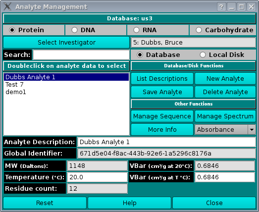

Index
Analyte Management:

Using this window, you can manage analyte information on your local
system or in the current database. You must be identified as the
investigator to view, delete, or update an analyte information in the
database.
To create a new analyte, click the "New Analyte" button; enter a
description string in the "Analyte Description" box; modify the editable
fields and dialogs that specify the analyte properties; and, finally,
click on the "Save Analyte" button.
Dialog Items:
- Analyte Type Radio Buttons Specify the type of analyte by
checking one of Protein or DNA or RNA or
Carbohydrate. Note that the >Carbohydrate portion
of the dialog has not yet been implemented.
- Select Investigator This button brings up a window that
allows selecting the current investigator for limiting buffer
descriptions.
- Search Enter any sequence of characters to filter the analyte
description list to entries containing the entered string.
- Use Database Check to select reading or writing the analyte
definition to or from the database.
- Use Local Disk Check to select reading or writing the analyte
definition to or from the hard disk.
- List Descriptions This button initiates a read of analyte
definitions and population of the analyte list widget.
- New Analyte Create a new analyte. The initial "New Analyte"
description in the list can be changed in the "Analyte Description"
text box.
- Save Analyte Saves the current analyte definition to the hard
disk or database.
- Delete Analyte Deletes the currently selected analyte from
the database or hard disk.
- Manage Sequence This button brings up a
Manage Sequence dialog
to enter sequences that define the analyte.
- Manage Spectrum This button brings up a
Manage Spectrum dialog
to set Wavelength and Extinction pairs. The type of spectrum must
be specified from the Optics Type drop down list immediately
below this button.
- More Info Bring up an
Analyte Details text dialog
to list details about the current analyte.
- Optics Dropdown List Select the type of optics for spectrum
management: Absorbance, Interference, or
Flourescence.
- Analyte Description Description set by analyte choice, but also
editable, especially when defining a new analyte.
- Global Identifier Read-only global identifier of the
analyte.
- MW (Daltons): Read-only molecular weight text for selected
analyte.
- VBar (cm3/g at 20°C): Read-only VBar at 20
degrees Centigrade.
- Temperature (°C): Temperature to use for calculation of
analyte parameters.
- VBar (cm3/g at T °C): Editable VBar at given
temperature.
- Residue count: Residue count for selected analyte.
- Reset Reset all analyte values to default setting.
- Help Show this documentation.
- Cancel Close the dialog and do not return analyte selections
to the caller. This button will only be visible when the dialog has
been called from another application.
- Accept Close the dialog and return analyte selections
to the caller. When this dialog is not called from another application,
the button will be labelled Close
 Manual
Manual